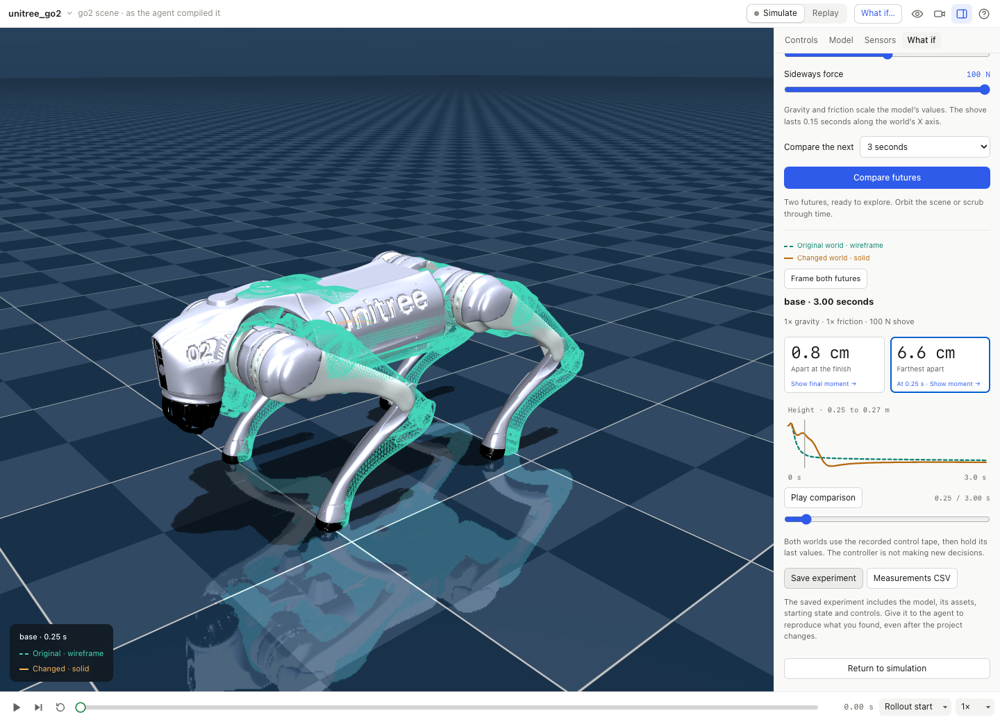

MuJoCo / Physics
Try a different world.
Take one moment in a robot's run and see two futures unfold together. Change the ground, gravity or a sideways shove, then scrub to the moment they part ways.
A reproducible physics experiment and measurements CSV.

Start something of your own
Give the agent a direction.
In Harness, start a MuJoCo project and paste this into the agent chat. Change the idea to make it yours.
Continue from something you kept
Keep the result in this project, or give the agent the path to your downloaded copy.
Then get your hands on it
Make a choice. See it happen.
Catch a moment
Open What if, choose a body to follow and pin the current state.
Change one thing
Try Slippery ground or Lunar gravity, then Compare futures. Scrub both worlds together, or click Farthest apart to inspect the greatest sampled difference.
Keep the experiment
Save experiment preserves the model, its assets, the starting state, controls and measured frames. Measurements CSV keeps the numbers too.
Both futures use the same recorded controls. This compares open-loop physics; it does not rerun the Python controller.